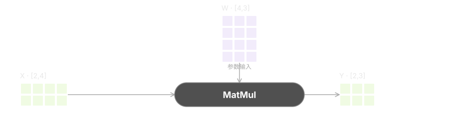

Agent 执行过程冗长，结果与异常难定位
问题 / 结果驱动
从异常与关键检查点
按判断需要展开证据
检查结果正确性 · 性能 · 验证状态
关键检查点保留证据与异常信号
按需回溯从问题定位到相关过程
检查结果
关注检查点
按问题回溯
面向 Agent 开发流程，让关键证据可理解、判断可检验、人的介入有效。

图元规定对象，Pattern 规定关系，框架规定空间；Skill 串联选择、组装与核查。
图元规定对象，Pattern 规定关系，框架规定空间；Skill 把选择与核查串起来。
按判断任务选择图元、Pattern 与框架。
交付时核查来源、绑定、语义与联动。

角色 · 形态 · 颜色

适用问题 · 数据绑定 · 选择传播
主体持续可见，证据按需展开
来源可追溯 · 对象语义一致 · 联动可检查
输出质量约束，不宣称已验证效果提升
面向 Agent 开发流程，让关键证据可理解、判断可检验、人的介入有效。